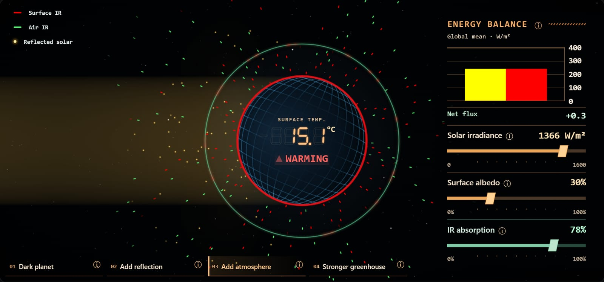

INTERACTIVE MODEL
Earth’s radiative equilibrium and the greenhouse effect
- Introductory
- Energy balance
- Albedo
- Greenhouse effect
- Korean / English
Adjust sunlight, surface albedo and infrared absorption, and watch the surface temperature settle where absorbed sunlight and outgoing infrared balance. Four guided steps build from a dark planet to a stronger greenhouse effect.
Questions to try
- What happens to outgoing infrared as a dark planet warms?
- What changes first when sunlight is reflected: energy in or surface temperature?
- Why can an atmosphere warm the surface without increasing incoming sunlight?
- How much warmer is equilibrium at an IR absorption of 0.82 than at 0.78?
Original: ClimateBlab energy-balance (MIT License) · Modified by Jin-Woo Heo, CCRL